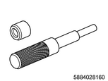
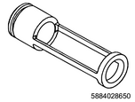
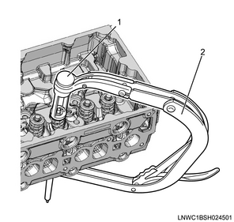
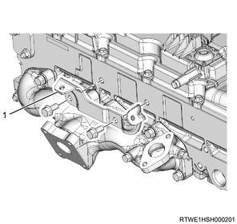
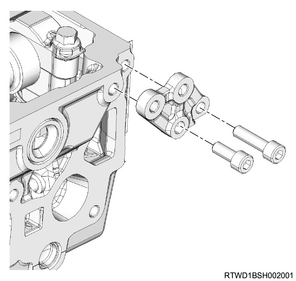

Cylinder head assembly reassembly (4JK1)
1. Oil seal installation
1. Install the oil seal to the cylinder head using special tool.
Note
- Install it to the injection pipe insertion surface using the oil seal installer.
- Tap the seal so that it is not slanted.
Caution
- Be careful not to damage the lip section.
SST: 5-8840-2820-0 - oil seal installer

- Cylinder head
- Oil seal installer
2. Valve guide installation
1. Install the valve guide to the cylinder head using special tool.
Note
- Use the valve guide remover and installer to tap the valve guide from the upper surface side of the cylinder head.

SST: 5-8840-2816-0 - valve guide remover and installer
Caution
- When replacing the valve guide, replace as a set with the valve.
- The height from the upper surface of the cylinder head to the end surface of the valve guide
- Cylinder head
Standard： 12.25 to 12.95 mm { 0.4823 to 0.5098 in } Height to the end surface of the valve guide
3. Spring lower seat installation
1. Install the spring lower seat to the cylinder head.
4. Valve stem oil seal installation
1. Apply the engine oil to the valve stem oil seal.
Note
- Apply it to the outer circumference of the valve guide.
2. Install the valve stem oil seal to the cylinder head using special tool.
Note
- Install it using a valve stem seal installer.
SST: 5-8840-2882-0 - valve stem seal installer
Note
- After installing the valve stem oil seal, check that it is securely inserted all the way, that the oil seal is not inclined, and that the garter spring will not come loose.
5. Exhaust valve installation
1. Apply the engine oil to the exhaust valve.
Note
- Apply it to the valve stem portion.
2. Install the exhaust valve to the cylinder head.
6. Inlet valve installation
1. Apply the engine oil to the inlet valve.
Note
- Apply it to the valve stem portion.
2. Install the inlet valve to the cylinder head.
7. Valve spring installation
1. Install the valve spring to the cylinder head.
8. Spring upper seat installation
1. Install the spring upper seat to the valve spring.
9. Split collar installation
1. Install the split collar to the valve using special tool.
Note
- Using a valve spring compressor adapter and valve spring compressor, compress the valve spring and install the split collar.

SST: 5-8840-2865-0 - valve spring compressor adaptor

SST: 5-8840-2546-0 - valve spring replacer

- Valve spring compressor adaptor
- Valve spring replacer
Caution
- Move it up and down to confirm that it moves smoothly.
10. Valve stem end cap installation
1. Apply the engine oil to the valve stem end cap.
Note
- Apply to the valve stem end cap and valve stem end.
2. Install the valve stem end cap to the split collar.
11. Exhaust manifold installation
1. Install the gasket to the cylinder head.
Note
- Assemble the projection section to the rear side of the cylinder head.
Caution
- Do not reuse the gasket.

- Projection
2. Temporarily tighten the exhaust manifold to the cylinder head.
Note
- Install the washer and nut, and tighten them temporarily as shown in the diagram.

- Stud bolt
- Washer
- Nut
3. Securely tighten the exhaust manifold to the cylinder head.
Note
- Tighten the 8 nuts according to the order given in the diagram.
Tightening torque： 52 N・m { 5.3 kgf・m / 38 lb・ft }
Caution
- Avoid tightening them too much because doing so may hamper expansion and contraction of the manifold due to heat.
12. Turbocharger assembly installation
1. Install the gasket to the turbocharger.
Caution
- Do not reuse the gasket.
2. Install the turbocharger to the exhaust manifold.
Tightening torque： 27 N・m { 2.8 kgf・m / 20 lb・ft }
Note
- Feed 0.5 cc engine oil from the oil filler.

13. Inlet manifold installation
Note
- The following applies to models with an EGR.
1. Install the EGR pipe adapter to the inlet manifold.
Tightening torque： 25 N・m { 2.5 kgf・m / 18 lb・ft }

2. Install the gasket to the inlet manifold.
Caution
- Do not reuse the gasket.
3. Install the inlet manifold to the cylinder head.
Note
- Tighten the nuts and bolts in the order shown in the diagram.
Tightening torque： 25 N・m { 2.5 kgf・m / 18 lb・ft }

Note
- The following applies to models without EGR.
4. Install the gasket to the inlet manifold.
Caution
- Do not reuse the gasket.
5. Install the inlet manifold to the cylinder head.
Note
- Tighten the nuts and bolts in the order shown in the diagram.

14. EGR valve installation
Note
- The following applies to models with EGR.
1. Install the EGR valve to the inlet manifold.
Tightening torque： 27 N・m { 2.8 kgf・m / 20 lb・ft } Nut
Tightening torque： 24 N・m { 2.4 kgf・m / 18 lb・ft } Bolt
Caution
- Do not reuse the gasket.
15. Bracket installation
1. Install the bracket to the cylinder head.
Tightening torque： 51 N・m { 5.2 kgf・m / 38 lb・ft }

- Bracket
16. Rear engine hanger bracket installation
1. Install the rear engine hanger bracket to the cylinder head assembly.
Tightening torque： 25 N・m { 2.5 kgf・m / 18 lb・ft }

2. Install the rear engine hanger to the rear engine hanger bracket.

SST: 5-8840-2886-0 - rear engine hanger

Tightening torque： 25 N・m { 2.5 kgf・m / 18 lb・ft }